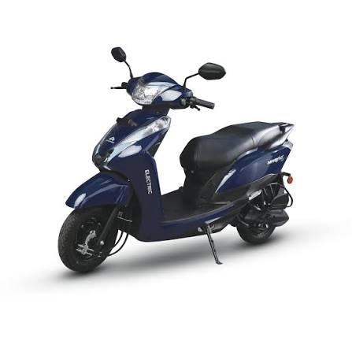
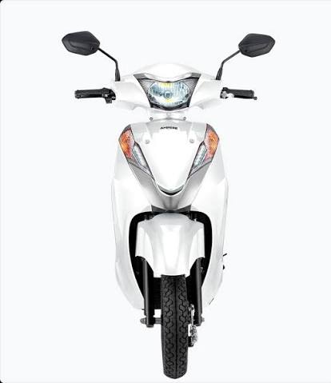
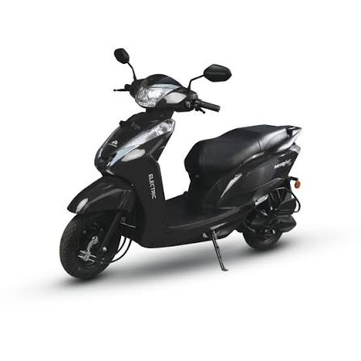
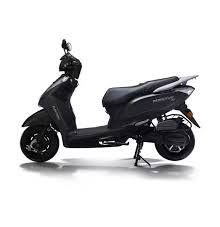
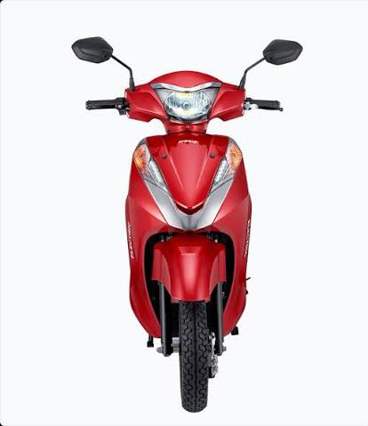
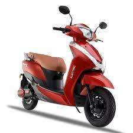
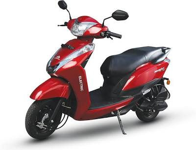

Convenience is the biggest reason to choose it
The brochure story lands best when removable charging is treated as the headline feature, because it removes one of the biggest barriers for first-time EV buyers.
The world's first removable battery scooter that charges like your phone. Get 90 km range with 3 smart riding modes and always-on LED lighting.

The brochure facts matter most when they stay focused on easy charging, city flexibility, and the familiar comfort that helps riders switch from petrol without friction.
Removable-battery practicality with everyday range and low-effort home charging.
The brochure story lands best when removable charging is treated as the headline feature, because it removes one of the biggest barriers for first-time EV buyers.
Eco, City, and Turbo give the page a cleaner performance message than a long feature list, especially for routine daily commuting.
LED lighting, digital instrumentation, under-seat storage, and a useful payload make Magnus EX feel approachable for practical urban riders.

Digital cluster and USB charging

Everything you need for daily commuting
Experience world's first scooter with practical, easy charging. Multiple angles, colors, and feature highlights.
.jpg)





Detachable battery pack charges like your phone. Charge at home, office, or anywhere with 15A socket.
3 riding modes (Eco/City/Power) let you adapt to traffic and conserve range when needed.
Always-on LED headlamp provides premium visibility without draining the main battery.
90 km claimed range perfect for city commutes. Lightweight design makes maneuvering easy.
Designed for the modern urban commuter who values convenience above everything else.
Carry the battery inside. Charge at your desk, kitchen, or living room. No garage needed.
90 km range covers most daily commutes. Lightweight body fits narrow parking spots effortlessly.
No expensive home charging setup. Just plug into any 15A household socket. Charge overnight.
Always-on LED headlamp. Coloured LCD display. Practical storage for city errands and commutes.
The Magnus EX captures the perfect balance of smart design and practical elegance for the modern urban commuter.
Classic elegance meets advanced technology. The perfect expression of smart commuting innovation.
+ Open feature gallery| Motor Type | Hub-Mounted BLDC Motor |
| Motor Power (Continuous) | 1.2 kW |
| Motor Power (Peak) | 2.1 kW |
| Top Speed | 53 km/h |
| Riding Modes | Eco / City / Turbo |
| Claimed Range | 90 km (ARAI Certified up to 121 km) |
| Real-World Range | 80–90 km |
| Load Capacity | 150 kg |
| Battery Type | Lithium-Ion (Removable) |
| Battery Capacity | 2.3 kWh (60V / 38.25 Ah) |
| Battery Warranty | 3 Years |
| Charging Time (Full) | 6–7 Hours |
| Charger Type | Standard 15A Home Socket |
| Removable Battery | Yes — charge anywhere |
| Kerb Weight | 82–90 kg |
| Tyre Type | Tubeless |
| Wheel Type | Alloy Wheels |
| Front Brake | Drum Brake |
| Rear Brake | Drum Brake |
| Suspension (Front) | Hydraulic Telescopic Fork |
| Suspension (Rear) | Coil Spring Shock Absorber |
| Under-Seat Storage | 22 Litres |
| Instrument Cluster | Digital Speedometer with Odometer |
| USB Port | Yes |
| Anti-Theft Alarm | Yes |
| Headlight | LED |
| Delhi | ₹95,000/- |
| Maharashtra | ₹95,000/- |
| Gujarat | ₹95,000/- |
| Rajasthan | ₹95,000/- |
| Karnataka | ₹95,000/- |
| All other states | ₹95,000/- |
*Ex-showroom prices inclusive of applicable subsidy. Contact Jai Mata Di Auto, Loni for on-road price.
Affordable financing with interest rates starting at 5.75% p.a. Upto 100% financing available.
| Ex-showroom Price | ₹95,000/- |
| Minimum Down Payment | ₹4,750 |
| EMI (12 months @ 5.75%) | ₹1,674/month |
| Interest Rate | Starting 5.75% p.a. |
| Tenure Options | 12 – 60 months |
Detach and charge at home, office, or anywhere with a 15A socket. The world's first removable battery scooter design.
Eco, City, and Turbo modes give you complete control over range and performance based on your route.
Powerful 2.3 kWh battery delivers up to 90 km range for city-to-suburb commuting on a single charge.
Bright LED headlight and tailamp for superior visibility and safety day and night.
Keep your phone charged on the go with the built-in USB charging port.
Feature-loaded digital speedometer with odometer, trip meter, and battery indicator display.
The Magnus EX is waiting for you at Jai Mata Di Auto, Loni. Book your free test ride today and discover the future of urban mobility.